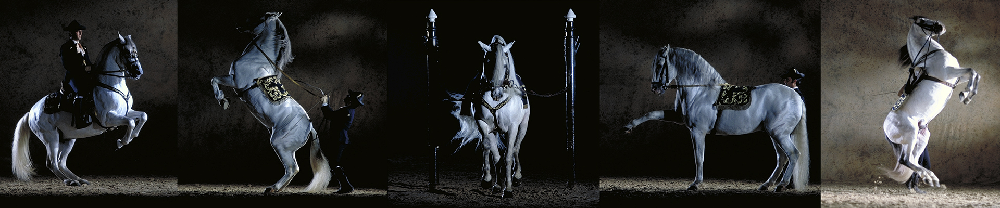
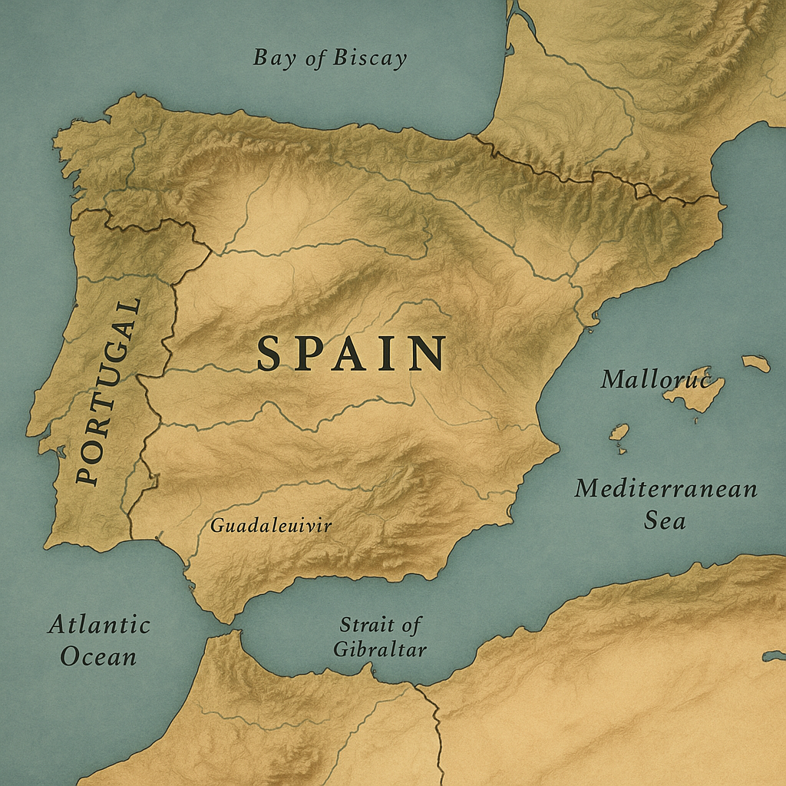

Part I
Bloodlines of Empire
The ancient roots of the Iberian horse, from early peninsula stock to Moorish influence and the breeding traditions that shaped the Andalusian.

Given Free Rein Series
Five essays tracing the bloodlines, riders, craft, and rituals that shaped Spain's horse culture.
Soul of Spain is a long-form series about how horse culture became one of Spain's most enduring expressions of identity. It begins with bloodlines and conquest, but it does not stay there. The series moves through the saddle, the rider, the court, the arena, and the afterlife of Spanish horsemanship as it travelled outward into the wider world.
Across these five parts, the focus stays on the relationship between landscape, craft, and movement. The Iberian horse was shaped by geography and by empire. Spanish riding styles evolved through warfare, stock work, ceremony, and regional pride. Saddles, schools, and festivals each reveal a different way Spain taught horse and rider to move together.

The result is not a single breed story or a single riding story, but a cultural one. Soul of Spain looks at the horse not as decoration to history, but as one of the ways Spain expressed power, discipline, elegance, and continuity across centuries.